CREW OS — место, где живут проекты, команда, техника, сметы и согласования коммерческой студии. Не софт для режиссёра, а инструмент продюсера, который держит бизнес: много параллельных заказов, общие люди и техника, деньги в реальном времени.
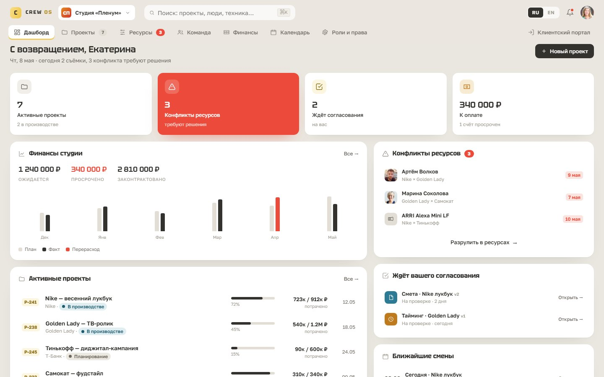
Лидеры рынка — StudioBinder, Yamdu, Celtx — заточены под кино: сценарий → breakdown → стрипборд → call sheet. Тяжёлые инструменты «от сценария».
Но у коммерческого продакшена — рекламные съёмки, бренд-контент, ивенты, фото — боль другая. Не «как разбить сценарий», а «как вести много проектов-заказчиков параллельно, не потеряв деньги, людей и технику». Эти студии живут в Excel, гугл-таблицах и мессенджерах.
CREW OS занимает эту нишу: операционная система студии — проекты, команда, техника, сметы, согласования и клиентский доступ в одном месте.
Оператор забронирован на две съёмки сразу — никто не замечает до съёмочного дня. Смета тихо расходится с фактом. Правка клиента тонет в переписке — какую версию согласовали, не помнит никто.
Одна операционная поверхность — с детекцией конфликтов ресурсов, бюджетом план/факт в реальном времени и версионными согласованиями — превращает хаос в систему, на которой студия может работать.
Владелец, продюсер, координатор, департамент-хэд, фрилансер, подрядчик и клиент видят один и тот же проект по-разному. Поэтому RBAC спроектирован как система, а не как «спрятать кнопку»: матрица сущность × роль × право (просмотр / комментарий / редактирование / согласование / нет доступа) — 12 сущностей, 7 ролей, 84 ячейки.
Одна и та же строка сметы отрисовывается четырьмя способами — вплоть до честного состояния 403.
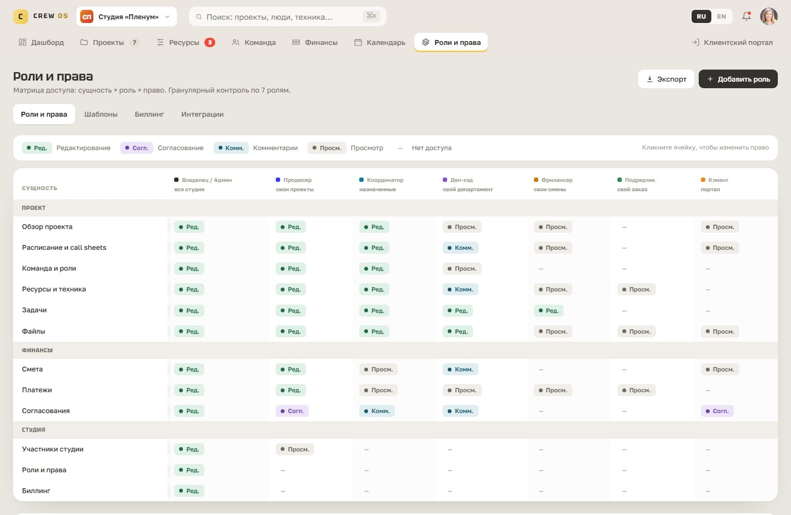
Web — тяжёлая работа: планирование, сметы, ресурсы, плотные таблицы, согласования. Здесь продюсер проводит день. Mobile — съёмочный день: свой call sheet, подтвердить участие, отметить «в пути / на месте». Минимум ввода — «глянул, понял, подтвердил».
Связывает всё один принцип: одни данные, разный срез под контекст. Смена — это строка в web-таймлайне и карточка «сегодня» на телефоне. Один объект, два представления.
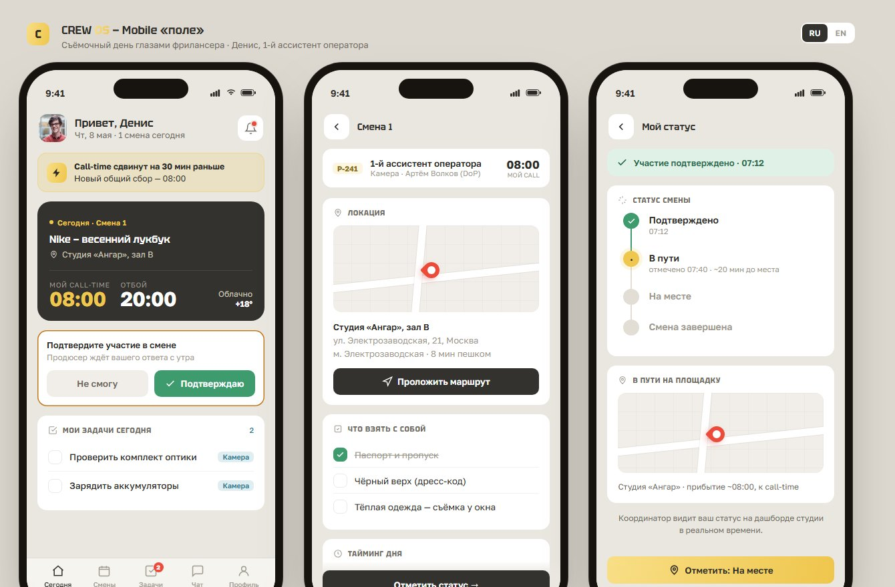
Один оператор — общий ресурс между проектами. Пересечение всплывает в день съёмки, когда менять что-либо уже дорого.
РешениеТаймлайн занятости с детекцией пересечений: конфликтные дни заштрихованы красным, в карточке — точный интервал и три выхода: сдвинуть смену, найти замену, запросить у продюсера.
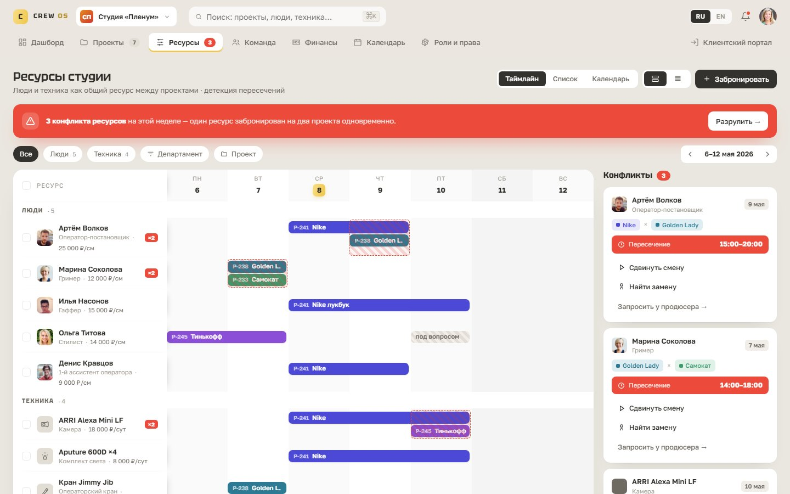
Пока платежи капают, никто не видит, что строка «свет» уже в перерасходе — и почему.
РешениеПлотная таблица estimate → committed → actual с подсветкой отклонений по строкам и drill-down в причину: перерасход по гафферу тянется из того самого конфликта в расписании.
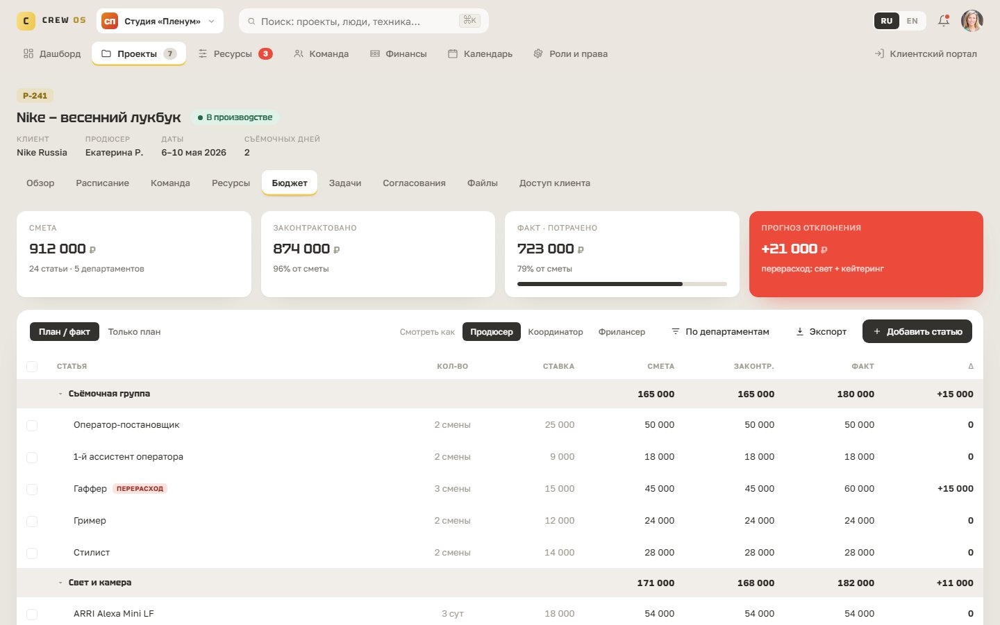
Клиент реджектит одну позицию в переписке — через неделю никто не скажет, какая версия сметы утверждена.
РешениеВерсионный флоу черновик → отправлено → на проверке → изменения → утверждено с diff-вью «что изменилось v1 → v2» и тредом, привязанным к конкретной строке.
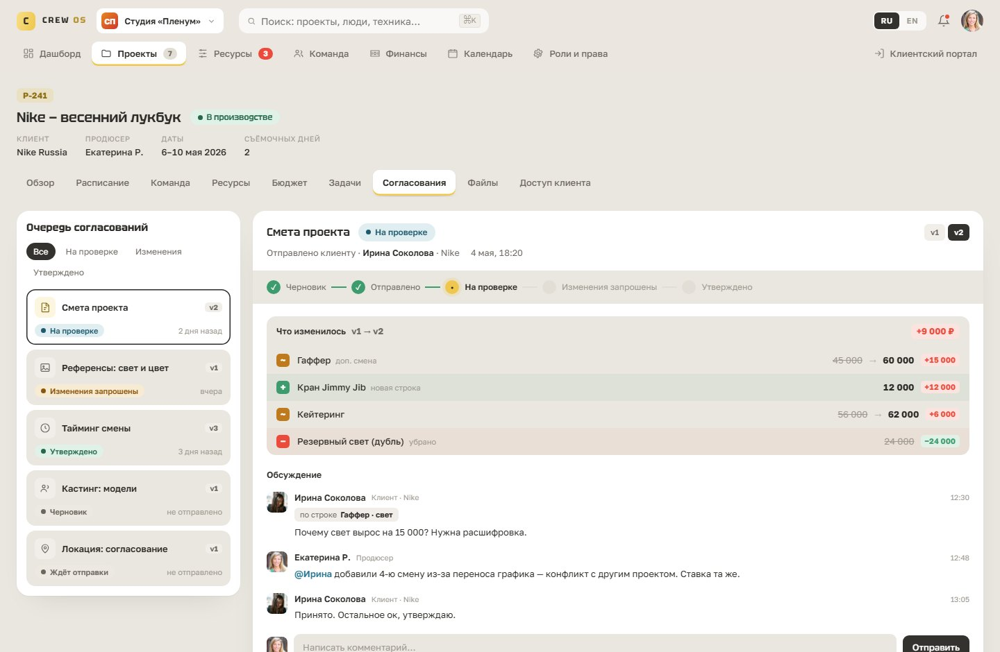
Разослали — и тишина: кто получил, кто прочитал, кто вообще придёт — неизвестно до утра смены.
РешениеЖивой call sheet: конструктор и предпросмотр, персональный call-time каждому участнику и статус доставки в реальном времени — 9 из 14 подтвердили, одна модель отклонила и помечена на замену.
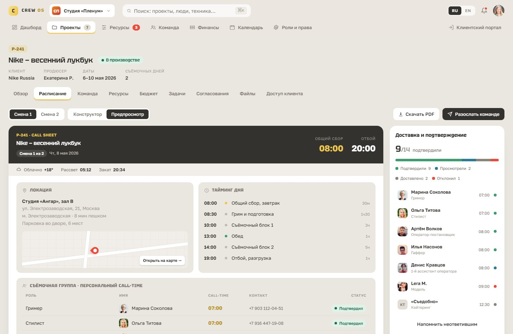
Дашборд сигналит о конфликтах → в ресурсах виден точный интервал пересечения → перерасход в бюджете раскрывается до причины → diff уходит клиенту → клиент согласовывает в портале. Жёлтая точка — куда кликает пользователь.
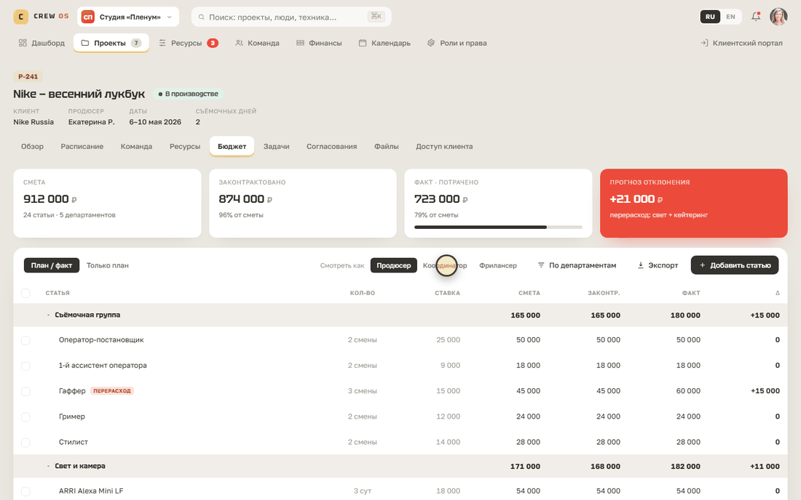
Бюджет глазами продюсера — полный доступ; координатора — только просмотр; фрилансера — честный 403. Права не «прячут кнопку», а перестраивают экран.
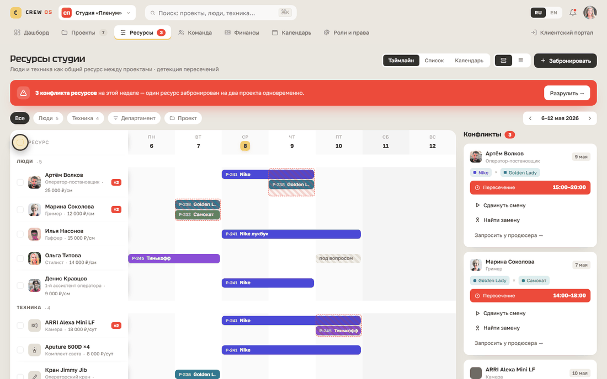
Массовое бронирование ресурсов, переключение плотности таблицы и командная палитра ⌘K с поиском по проектам, людям и технике.
Пепельная бумага, дисплейный Tektur поверх рабочего Golos Text, один мягко-жёлтый акцент и принцип «без разделителей»: секции держатся на заливках и тенях, а не на линиях. В плотных таблицах — тинты, в отдельно стоящих алертах — сплошной красный.
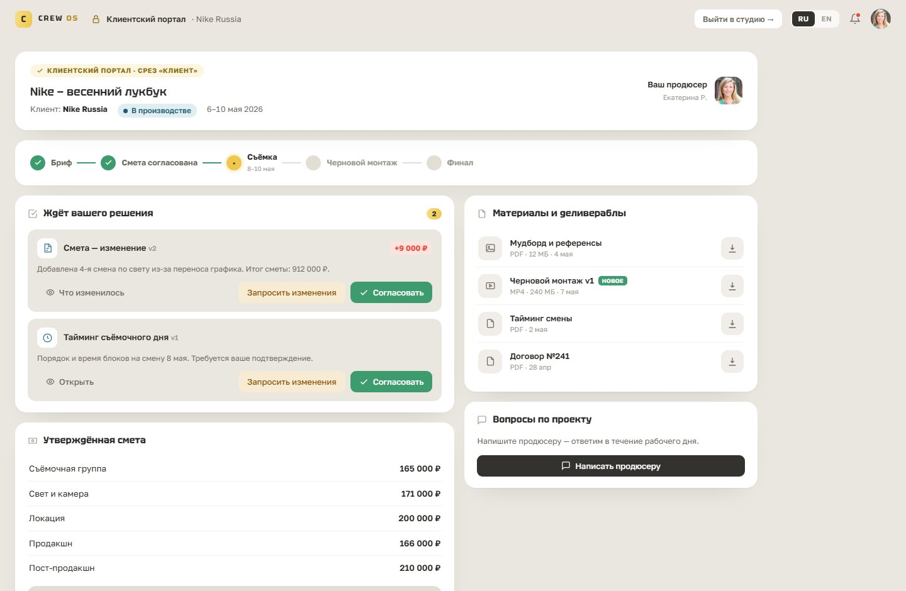
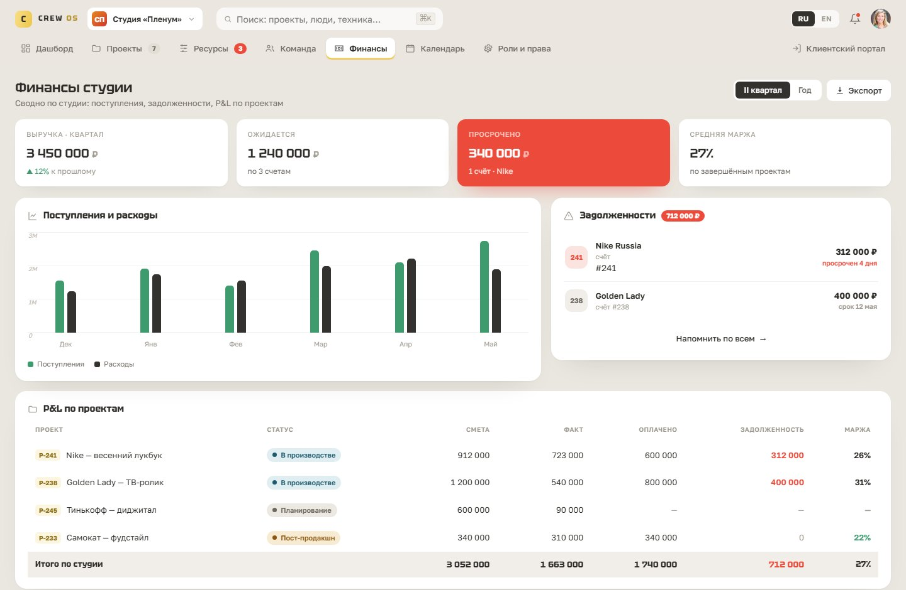
Кликается насквозь, двуязычный. Happy path: запуск проекта → согласование сметы → call sheet. Sad path: конфликт ресурса, который нужно разрулить. Плюс роли, состояния, ⌘K и живые таблицы.
Что B2B-продукт может нести по-настоящему сложную логику — мультиролевость, плотные данные, версионность, план/факт — и оставаться читаемым. Помогает сквозной сюжет: одна лишняя смена гаффера проходит через конфликт ресурсов, перерасход бюджета, diff согласования, решение клиента, call sheet и дашборд координатора.